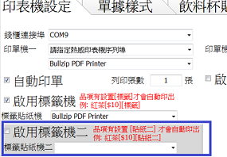

如何設定標籤機列印的品項?
3 個回答
您好 假定您有一台貼紙機 一台標籤機
系統可設置
{主選單}
您好
標籤機是指印貼紙機 印單機是指熱感紙印出餐點明細
不曉得您說的2台 指的是 印貼紙的?還是印感熱紙?
聽您的描述 似乎是
每一個品項都印出一張貼紙
點五個漢堡 三個蛋餅 就印出 8 張 然後貼到每個餐點上
這總用法 是店面不管內用外帶 全都是用免洗餐具
才有可能將貼紙貼到各餐具上( 紙杯子 紙餐盒 紙盤子)
內用客戶 也一律用免洗餐具 餐點上也貼紙
站長還沒遇過有這樣的做法的店家
想跟您確認一下是否正確理解您的需求?
除了飲料外 所有的餐點一律都各印出一張貼紙?
您好
已新增第二台標籤機功能

菜單品項有設置 [貼紙二] 指令 才會列印到第二台
舉例
{主選單}
漢堡
一般漢堡
豬排漢堡[$30]
培根漢堡[$30][貼紙二]
蛋餅
豬排蛋餅[$35][標籤]
豬排漢堡 不印貼紙
培根漢堡 ->印到第二台
豬排蛋餅 ->印到第一台
請到首頁下載更新
請參考